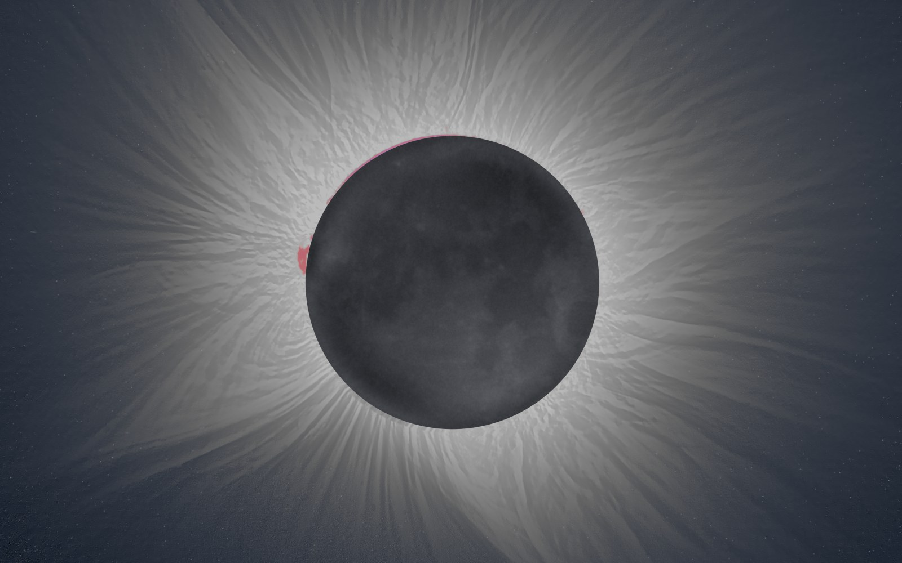

Guide
How to process total eclipse photos: the HDR of the corona step by step
From the series of exposures to a corona with all its filaments: the general workflow (align, stack, HDR, radial enhancement) and how Easy Corona does it.
1
Why one photo isn't enough
During totality the light of the corona falls by thousands of times between the edge of the Moon and the far streamers. A camera can't cover that range in one exposure: a short photo shows the prominences and the inner corona, a long one the outer streamers, but with the centre burned out. The solution is to combine the whole series into a single high dynamic range image: an HDR.
The HDR is only the beginning. It is a linear image that looks almost black, and the corona is in there, hidden: you have to stretch it and bring out its filaments without raising noise or halos.

2
The workflow, step by step
- Develop the RAW files without edits, with the same settings on every photo. If you shot darks, bias and flats, they are applied here.
- Align the photos of each exposure. With an untracked mount, the Sun and the Moon drift, and not together. Alignment is done on the Moon or on the corona itself, to a fraction of a pixel.
- Average per exposure. The photos of one exposure are averaged: noise drops with the square root of the number of photos. The Moon needs care, because it moves between photos: averaged naively, its edge shows ghosts.
- Align the exposures with each other, from the shortest to the longest.
- Stack the HDR. Each pixel comes from the exposures where it is neither burned nor buried in noise, weighting more those with less noise in that area. This decides how much grain the far corona will have.
- Stretch the light. A tone curve lifts the dark values until the corona shows, and the sky gradient is subtracted: several radii from the Sun it is brighter than the corona itself.
- Enhance the corona radially. The corona is organised around the Sun, and noise is not. The filters that really work exploit that symmetry: tangential blurs, radial normalisation (NRGF), MGN and others. See «Under the hood» for what each one does.
- Colour. Neutral colour or the camera's real colour, and the sky of totality.
- The Moon, the chromosphere and the stars. They are treated separately, because they need different exposures.
- Save as a 16-bit TIFF to keep editing.
3
How Easy Corona does it
Easy Corona does all those steps on its own. In Create HDR automatically you choose your eclipse photos (from one or several folders) and a destination folder, and press Create the HDR. The app reads each photo's exposure, groups them, aligns, averages, stacks and leaves the HDR. With the box When done, enhance the corona all the way to the final result it carries on to the finished image.
Then, in simple mode, you choose the colour (neutral corona or original colour) and the enhancement (high, medium or low), and each slider shows right away in the preview. The free version does everything, at 1200 px and with a watermark, so you can try it with your photos.

4
What usually goes wrong
- Grain in the sky. It is what happens when a noisy image is stretched too far. More photos per exposure and good stacking lower the noise before enhancing.
- Halos or dark rings around the Moon. They come from sharpening filters applied over the edge. The edge has to be protected.
- A blurred or double Moon. Stacking treats it separately.
- Unreal colours. A grey sky or a very strong tint. Check the result at full size, not as a thumbnail.